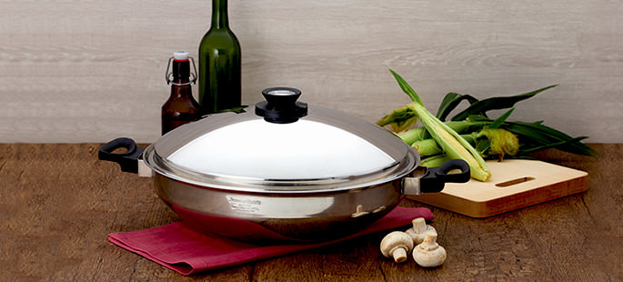
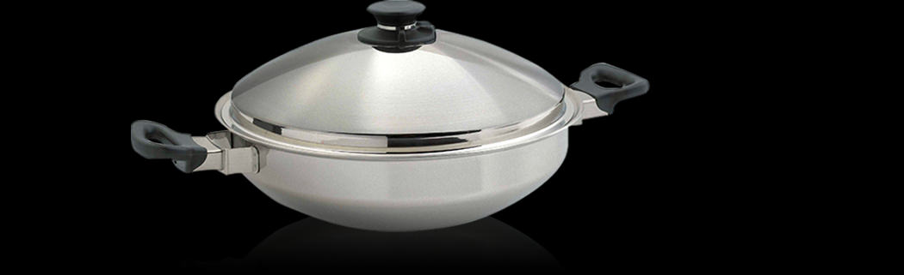
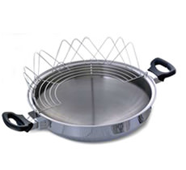
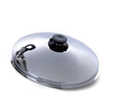
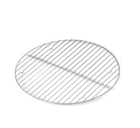
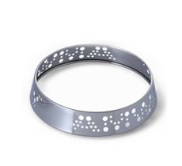
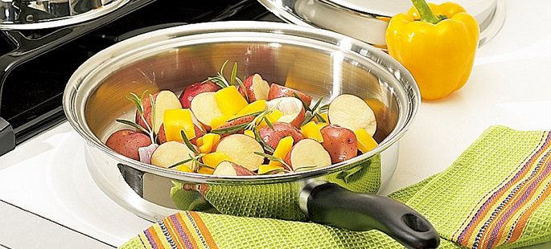
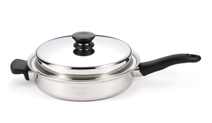

【工欲善其事，必先利其器，挑選最適合你的鍋具！】

中式炒鍋
擁有五層式結構，煎、煮、炒、炸皆適宜，能在烹調過程形成蒸氣鎖，有效進行獨特的Vitalok™低溫免水煮食法，比一般煮沸法多鎖住三分之一以上的營養素，提供全家人更健康的美味料理。
點我了解更多
【人性化設計，做菜輕鬆上手】

- 鍋蒂上的蒸氣活門可排放蒸氣。
護指裝置可防止拿鍋蓋時被燙傷。 - 高鍋蓋，增加煮食空間，
大份量一次搞定！ - 人體工學設計的鍋蒂及鍋耳，
握提更順手。
隔熱式樹脂耐熱度高達200℃ - 傳統圓鍋底設計，
適合東方人的烹煮習慣，
方便食物翻炒。 - 鍋身採多層式18/8不銹鋼結構，
導熱均勻，保溫效果佳。
【多元化配件，料理百變立即上桌！】
|  承架 用來瀝乾油炸食物的多餘油分。 |  鍋蓋內高5.5cm |  蒸架用於蒸煮各項食物使用 |  支撐架平穩鍋具，加熱更方便 |

煎炸鍋
具有與原味複合金鍋一樣頂級材質與時尚設計的3公升煎炸鍋，擁有七層式不銹鋼結構，煎、煮、炒、炸皆適宜。 有了它，做菜不但更輕鬆、充滿樂趣，起鍋的每道佳餚更兼具滿滿食物的原始營養與美味。
點我了解更多
|

煎炸鍋（連蓋）七層式結構 直徑28cm / 深度6cm / 含蓋深度13cm |
▪ 利用七層式不銹鋼結構，除了簡單的煎炸料理與家常的蔬食烹炒之外，即使是製作餅乾、糕點，安麗煎炸鍋都可輕鬆完成。 ▪ 油量多時可當炸鍋，油量少時可當煎鍋，也可用於煎煮油脂較多而不需添加食用油的肉類。 |
|